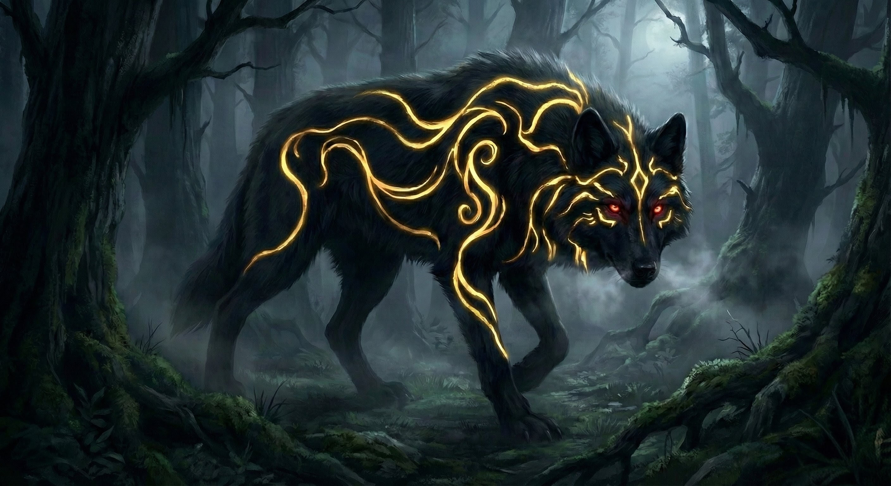

Oliver encarou o lobo à sua frente. O animal o encarava de volta, imóvel, como se calculasse o momento exato de atacar. A garganta de Oliver secou.
Ele se virou e tentou correr, mas outro lobo surgiu e o interceptou, rosnando. Antes mesmo de dar dois passos, Oliver já sabia onde os outros estavam, ele poderia ver a cor de outras figuras, emanavam uma luz negra com um leve traço de vermelho. Não demorou para entender, estava cercado.
Naquele tipo de situação, tinha quase certeza de que estava morto.
Oliver havia despertado, mas não estudara uma única magia do grimório. Fazia menos de um dia que aquilo acontecera, ele simplesmente não tivera tempo. Não fazia ideia de como lançar um feitiço, e conhecimento nenhum lhe serviria se não conseguisse usar.
Ele também não carregava arma alguma. E, sinceramente, mesmo que tivesse, duvidava que isso mudasse algo. Nem mesmo um homem adulto escaparia de uma alcateia de oito lobos. Ainda assim, Oliver não morreria sem lutar.
O lugar não era exatamente uma clareira, a mata era fechada, com troncos e raízes por todos os lados. A menos de 5 metros, viu uma árvore. Aquilo era sua única chance.
Ele não sabia muito sobre os lobos daquele mundo, mas, se fossem como os que conhecia, não seriam bons escaladores. Se estivesse enfrentando um grande felino, como uma onça ou um tigre, seria diferente, esses subiam com facilidade. Mas Oliver nunca ouvira falar de felinos assim naquela floresta.
Os dois lobos que haviam se mostrado continuavam se aproximando, rosnando, passo a passo. Oliver virou de costas e correu para a árvore. Ela estava perto. Ele a abraçou e começou a subir.
Para seu azar, os lobos foram tão rápidos quanto.
Um deles mordeu sua perna e puxou com força. Oliver despencou, batendo no chão com um baque seco. O lobo não soltou, continuou mordendo, sacudindo a cabeça. Oliver pôde sentir os dentes cravando, fundo demais, como se chegassem ao osso, e viu o sangue jorrar, tingindo o focinho do animal.
“Aaaaaaaaaah!” Oliver gritou, desesperado.
Ele tentou golpear a cabeça do lobo com a mão nua, mas foi inútil. A fera era grande, forte, e parecia não se importar. Em resposta, mordeu ainda mais forte e o chacoalhou.
“Socorro! Alguém! Ajuda!” Oliver gritou, procurando qualquer voz humana no meio da mata.
Ninguém veio.
As lágrimas desceram sem que ele percebesse. Na sua mente, sobreviver era impossível… mesmo assim, ele tentou. Havia uma pedra ao alcance. Parou de socar o ar e a pele do animal, agarrou a pedra e bateu com tudo na cabeça do lobo. Uma fina linha vermelha escorreu do ponto onde acertou, era sangue. Mas não foi o suficiente. O lobo manteve o aperto firme, como uma armadilha de aço.
Como se não bastasse, o segundo lobo, que até então apenas observava, avançou e mordeu a mão dominante de Oliver, a mesma com que ele golpeava. A dor explodiu. Oliver sentiu os ossos sendo esmagados sob a pressão da mordida. Era apenas uma criança de sete anos, seu braço era fino demais para resistir.
Naquele instante, algo dentro dele cedeu. O ímpeto morreu.
Ele aceitou.
Ele ia morrer.
Imagens começaram a atravessar sua mente em disparada, o sorriso da mãe, os poucos dias bons que ainda conseguira ter naquela vida, a tia Erina, com sua ironia afiada, sua inteligência, as risadas e provocações que trocavam. E, mais ao fundo, lembranças que Oliver se obrigara a enterrar… o pilar verde, a sensação de ser engolido, o fim da vida passada.
Oliver se lembrou dos pais, da irmã mais nova, da namorada, Kiara, e do grande, e improvável, amigo Kyle. Vieram também outros rostos, outras vozes, pessoas que, de algum jeito, tinham sido importantes na sua outra vida. As lembranças se misturaram, o mundo perdeu o foco e tudo começou a ficar borrado, como se ele estivesse se apagando. Então, de repente, ele sentiu que o aperto havia parado.
A visão começou a borrar.
O primeiro lobo o largou. O segundo recuou, ainda rosnando. Oliver não entendeu, até perceber que outras presenças se moviam, fechando o círculo. Lentamente, uma a uma, elas se revelaram.
Cinco lobos cinzentos surgiram entre as sombras. E, no meio deles, abriu-se caminho para um último.
O lobo que apareceu era diferente de tudo. Para começar, pelo tamanho, era quase do tamanho de um carro. O pelo era de um preto tão abissal que parecia engolir a luz. Marcas douradas se espalhavam pelo corpo como linhas antigas, e os olhos vermelhos brilhavam com uma frieza inteligente. Não havia dúvida, era o líder.

Ele avançou na direção de Oliver. Ao fazê-lo, os demais recuaram e baixaram a cabeça, submissos. Em poucos passos, Oliver e o lobo negro estavam frente a frente.
O lobo mostrou as presas. Era um animal magnífico, e também mortal.
Oliver não tentou revidar. Seu corpo não obedecia mais, e sua mente já aceitara o destino. Só lamentou uma coisa, sua mãe talvez nem tivesse um corpo para enterrar. Talvez nunca soubesse o que, de fato, acontecera com ele.
Ele fechou os olhos e esperou.
Mas a mordida que tiraria sua vida não veio.
Quando abriu os olhos, viu todos os lobos olhando ao redor, inquietos. Pareciam… com medo. Medo de algo mais forte do que eles, mais perigoso, mais mortal. Procuravam a ameaça, mas não a encontravam.
Antes que a localizassem, ela se revelou.
Uma figura se moveu em velocidade absurda, rápida demais para ser acompanhada, Oliver só viu um borrão cortando o ar em direção ao lobo de pelos escuros.
O lobo negro também reagiu. Disparou na mesma direção. Por um segundo, pareceu que haveria colisão.
Não houve.
No último instante, a figura misteriosa desviou como uma sombra e desferiu um golpe preciso na jugular do lobo. O corpo colossal cambaleou, como se a própria força tivesse sido desligada, e caiu.
Houve Silêncio.
Morto! O Líder da alcatéia estava morto!
Ao ver o líder tombar, os demais lobos não hesitaram. Fugiram mata adentro, desaparecendo entre os troncos, cada vez mais fundo. A figura nem tentou persegui-los.
Ela ficou ali, parada diante de Oliver.
O garoto, tremendo, ergueu o olhar. A forma era alta, encoberta por roupas escuras, detalhes demais se perdiam na sombra e na distância. Mesmo assim, Oliver tentou usar a visão estranha que adquirira, aquela percepção de cores.
E congelou.
Não havia cor alguma.
Ou… havia algo pior, um vazio que parecia sugar as cores ao redor, como se a própria luz tivesse medo de se aproximar.
Oliver engoliu em seco.
“O-olá?” a voz saiu fraca, quebrada.
A figura inclinou a cabeça, avaliando-o.
“Você consegue ver… não consegue?” disse, em um tom baixo, impossível de identificar.